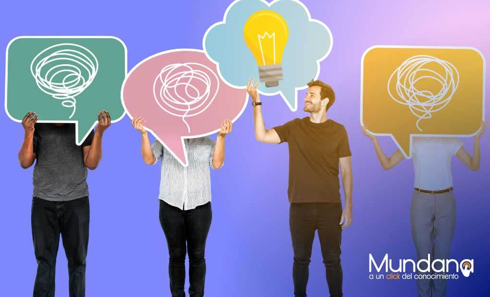

El pensamiento crítico es necesario para distinguir entre lo cierto y lo falso.
La escucha activa es estar atento y concentrado en una conversación, en los debates te sirve para encontrar los puntos flojos del otro equipo, además te ayuda en tu vida cotidiana para estar atento a las conversaciones y entre otras cosas, que la otra persona se sienta escuchada.

Los debates se separan en dos:
-Improvisados: Son debates en los que nos dicen el tema y la postura, 10 minutos antes, en estos aprendemos a razonar rápidamente y siempre con un poco de gracia.
-Preparados: Estos debates se preparan durante semanas, depende de la importancia, con estos aprendemos a buscar información y discutiendo las diferentes posturas de un tema.